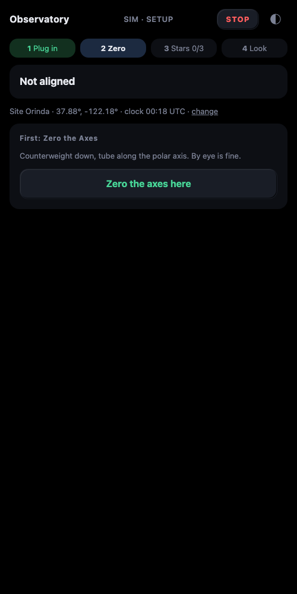
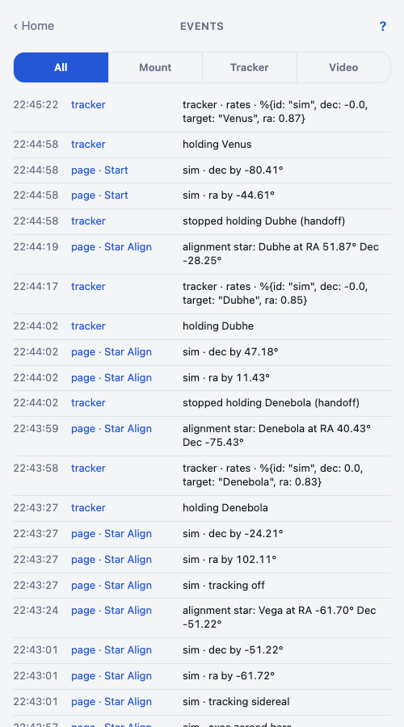
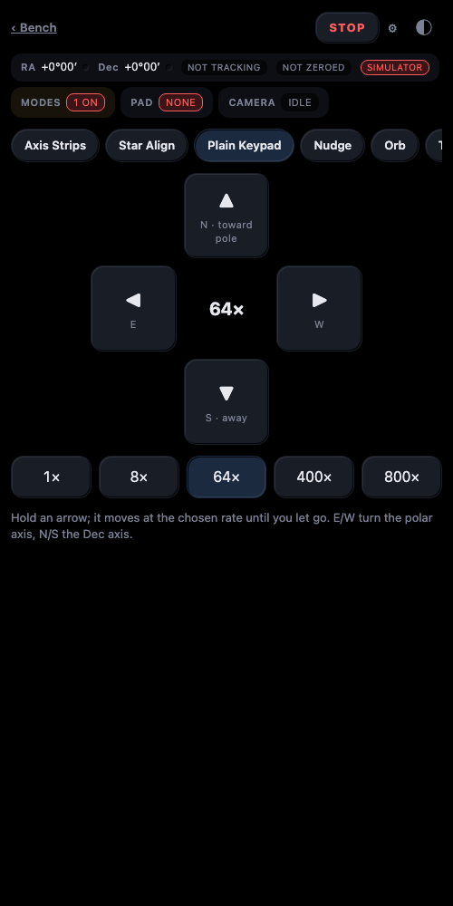

Observatory: a telescope you just plug in
I have a Sky-Watcher EQ6-R and I don't like its hand controller. So the hand controller went in a drawer, an EQDIR cable went from the mount's HAND CONTROL jack to my laptop, and I wrote the other end in Elixir. The whole thing is called Observatory and it's open source.
The pitch, if there is one: plug the mount in, open a page on your phone, look at stuff. Everything precise lives underneath where you can get at it later.
What it is
It's a Mix umbrella. apps/mount speaks the Sky-Watcher motor-controller protocol at 9600 baud over circuits_uart. Mount.Server owns the mount's state and broadcasts a snapshot every 250 ms and on every change. apps/controller is a Phoenix LiveView app that subscribes to that and renders from assigns. Nothing about the telescope is ever held only in a browser, which is why three phones and the laptop all show the same scope at the same time.
There is almost no JavaScript. app.js has six hooks, each with a written reason at the top of the file: touch-and-pull, pinch-zoom, reading photo pixels, geolocation, the tilt sensor, video playback. Everything else is phx-click and server-rendered SVG. No bundler.
A firmware/ directory holds a Nerves image so the same apps run on a Raspberry Pi next to the mount. mix phx.server at the root runs it all on the laptop, and when the cable isn't plugged in you get a simulator that speaks the real wire protocol.
Tonight's flow
The front page is not a menu. It's four steps, and it shows you the one you're on.

Plug in. Power the mount, plug in the cable. It appears in a few seconds.
Zero. The EQ6-R has no absolute encoders. At power-on both axes read 0x800000 wherever the mount happens to be. So you put it upright by eye, counterweight down, tube along the polar axis, and tap Zero the axes here. That gives the software a reference for the axis angles and arms the soft limits that keep it from winding up your cables. It has nothing to do with the sky.
Stars 0/3. You do not need Polaris. The page names a bright star and says where it is ("high in the west"). Slew near it, centre it with any control, tap That's it. One star fixes the offsets. Two stars far apart pin down where the polar axis actually points. Three stars say how well they agree, and once they agree well enough to land things in an eyepiece the page locks.
Look. Locked, the page turns into the control surface. Tonight's targets ranked for this site and this scope, each with Go. The mount slews and then a tracker holds it on both axes at whatever rates the fitted geometry wants, so a crooked polar axis doesn't matter for looking.

Centre it opens a nudge pad; when you let go the hold picks up from where your hand left the tube, not from where the model thought the object was. STOP is in the header of every page and on the game pad. It stops both axes and ends the hold.
Who moved the scope
Every command through the driver is logged with who sent it: which page, the game pad, the tracker, the driver itself. When the camera shows the tube somewhere odd, this page answers the question in one glance.

Each LiveView tags its own process on mount, and the events module reads the tag:
# apps/controller/lib/controller/source.ex
def on_mount(:default, _params, _session, socket) do
name = socket.view |> Module.split() |> List.last() |> String.replace_suffix("Live", "")
# modules keep their names; the log uses the words on the page
name = Map.get(%{"Lineup" => "Star Align", "Start" => "Start", "Dpad" => "Keypad", "Mount" => "Axis Strips"}, name, name)
Telescope.Events.tag("page · #{name}")
{:cont, socket}
end
The pad
A USB game controller drives the scope too, and the browser never sees it. apps/input is a GenServer per device over a tiny C port program linked to libhidapi. The server reads the pad, maps it, and calls the driver. The page just shows what the pad is doing. That's the rule for all hardware here: serial and HID are read by the server, so Safari, Firefox and a phone all work the same.
The look
Black is #000 because OLED phones turn those pixels off. Surfaces are told apart by tone, never by hairlines; there are no borders anywhere. Anything you can push is a key with a two-tone bevel, light edge top-left, dark edge bottom-right, that sinks when pressed. A latched state is a lit key, not an outline.

/* apps/controller/priv/static/assets/css/app.css */
--bevel: inset 1px 1px 0 var(--hi), inset -1px -1px 0 var(--lo);
--bevel-in: inset 1px 1px 0 var(--lo), inset -1px -1px 0 var(--hi);
I wanted the panel of a 1970s machine room, kept calm. There's a red night mode where even "on" is a shade of red. Nothing flashes.
What went wrong
Three stories, in the order they scared me.
The pad kept the mount moving after I let go. The input mapper handled every pad report synchronously with blocking calls into the driver. When the stick crossed zero the driver's stop-and-wait took seconds, hundreds of "trigger held" reports queued up, and after my hand came off the mapper replayed them, each one re-feeding the driver's dead-man timer. STOP was undone within a second by the next stale command. A dead-man fed by stale commands is not a dead-man. The rule is now in CLAUDE.md as "only fresh intent moves the scope": every report is stamped with monotonic time, anything older than a few hundred milliseconds is dropped, backlogs coalesce to the newest report, and the mapper has its own watchdog that releases when input goes quiet.
The third alignment star landed 9° short. Found by walking the whole flow on the simulator. The tracker issues its slews with hold: true so a dead tracker can never leave motors running. But that leaves a dead-man armed in the driver, and it fired a second into the next goto. The fix is in the driver, not the UI:
# apps/mount/lib/mount/server.ex
defp goto(state, axis, steps, dir) do
# a goto is not a held slew: a dead-man left armed by the last hold
# (a tracker's, a pad's) would stop it a second in
%{state | holds: cancel_hold(state.holds, axis)}
|> stop_axis(axis)
|> send!("G", axis, P.motion_mode(:goto, dir))
|> send!("H", axis, P.from_int(steps))
Every confirm dialog was inert. "Zero the axes here" and "Start over" are supposed to ask first. They didn't, because phoenix_html.js was never served. data-confirm is a no-op without it. Nobody noticed for days because the buttons still worked; they just didn't ask.
What's next
Plate solving to replace the eyeball-centred stars. A durable event log with an outward feed. The Pi image getting the same attention the laptop has had. And a real night outside with all of it, which is the only test that counts.